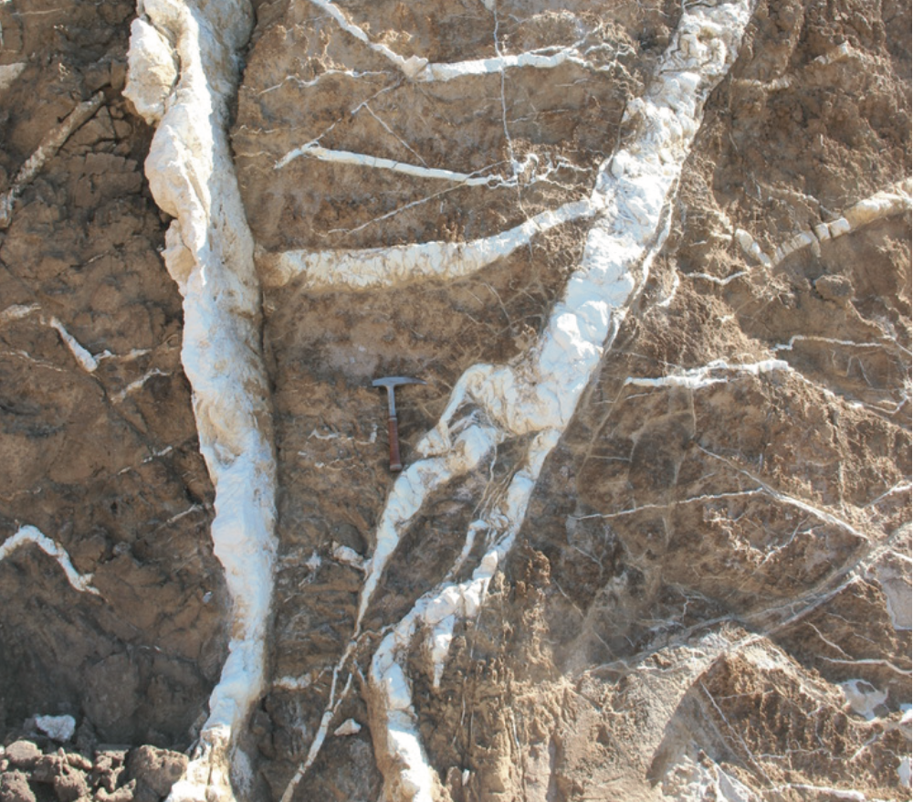

Magnesium Carbonate Formation
I work on understanding the formation of magnesium carbonates on Earth and implications for the Perseverance rover landing site

Magnesium carbonate veins within serpentinite in the Gumigil mine, Marlborough, Australia
I lead a group of Caltech scientist that wrote a review paper on magnesium carbonate forming environmnets and conditions for use by the Perseverance rover science team. I have also studied magnesium carbonates in the field and in the laboratory using infrared and raman spectroscopic instruments similar to those on the Perserverance rover.